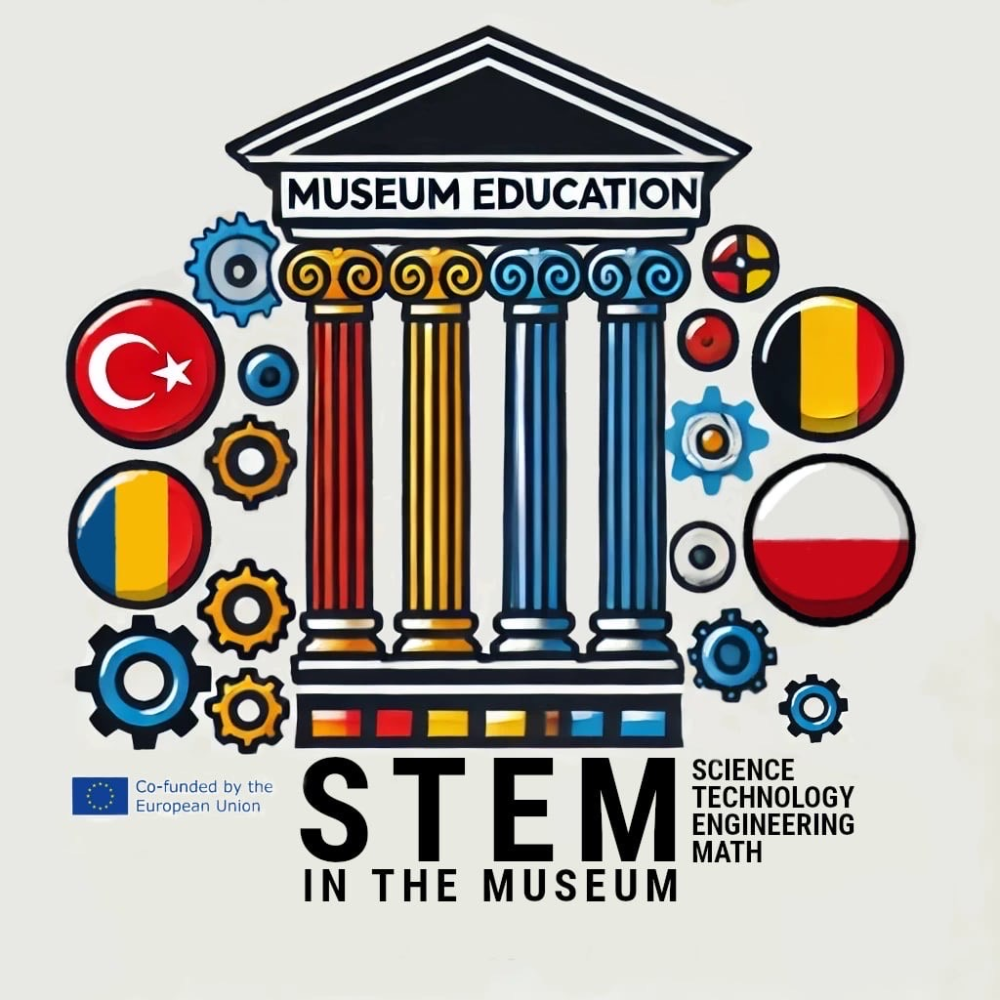
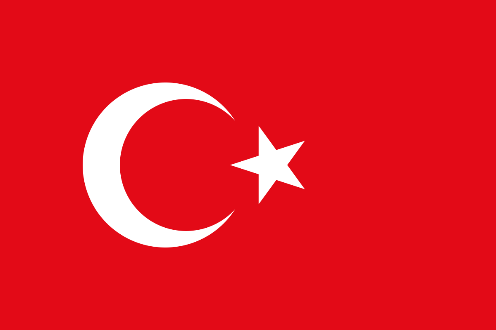
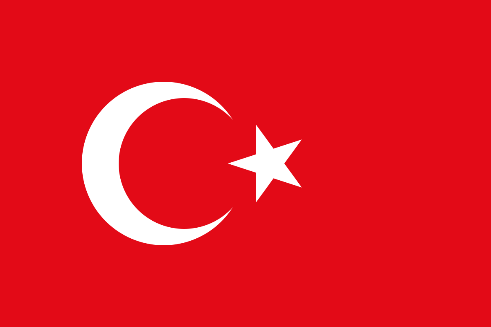

 



Michał Jemioło - współkoordynator projektu
Imie Nazwisko - współkoordynator projektu
Marek Jadczak
Anna Skoczek
Ilona Szurmańska
Imie Nazwisko
Imie Nazwisko
Imie Nazwisko
Izabela Korzeniowska
Amelia Ledzińska
Jakub Niedzwiecki
Patryk Widło
Karol Leszczyński
Nikodem Szpak
Bartłomiej Andrzejewski
Gabriel Małek
Michał Mazur
Gabriel Małek
Zespół Szkół Technicznych i Branżowych im. Bohaterów Westerplatte w Brzesku
Adana Science and Art Center (BILSEM), in Adana – szkoły dla utalentowanych uczniów w Adanie, w Turcji
Liceul Teoretic „Dante Alighieri” - liceum z Bukaresztu w Rumunii
Instituu voor Turkse Studies Integratie en – Onderzoek - Instytutv Studiów Tureckich, Integracji i Badań z Antwerpii w Belgii
Karol Leszczyński - wygląd i interakcja strony z urzytkownikiem
Jakub Niedzwiecki - projekt i zarządzanie bazą danych oraz treściami na stronie
Patryk Widło - wsparcie techniczne, projektowanie wyglądu strony oraz bazy danych, grafiki na stronie